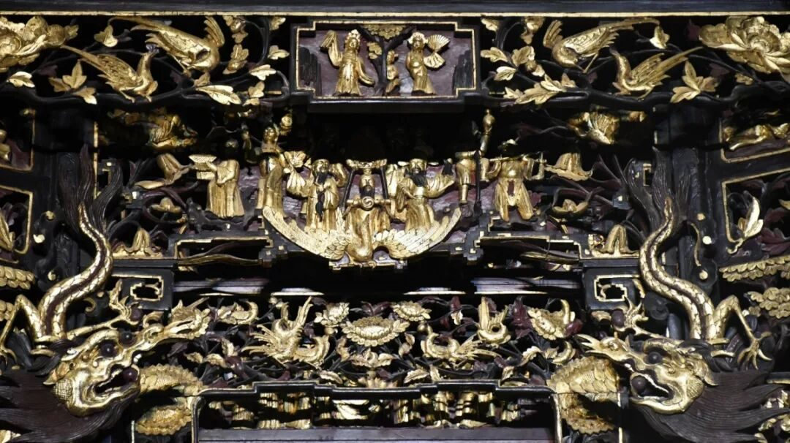
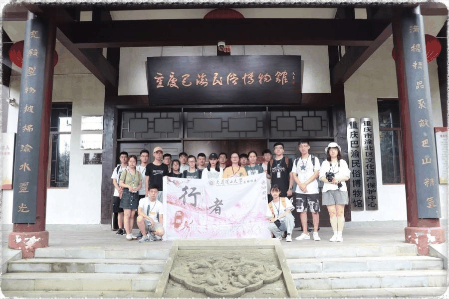
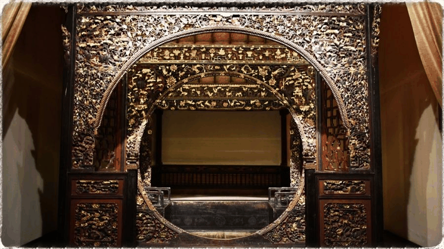
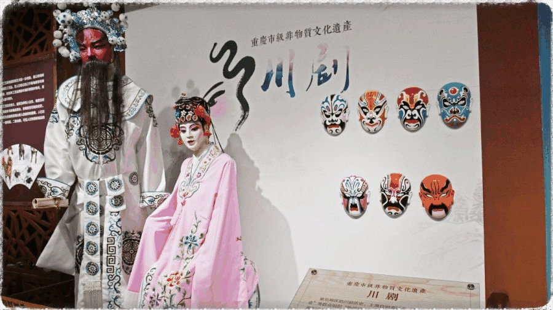
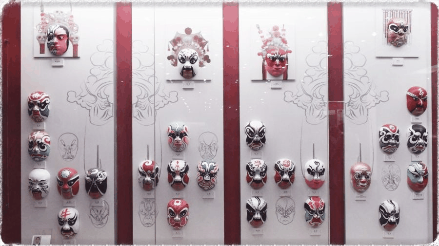
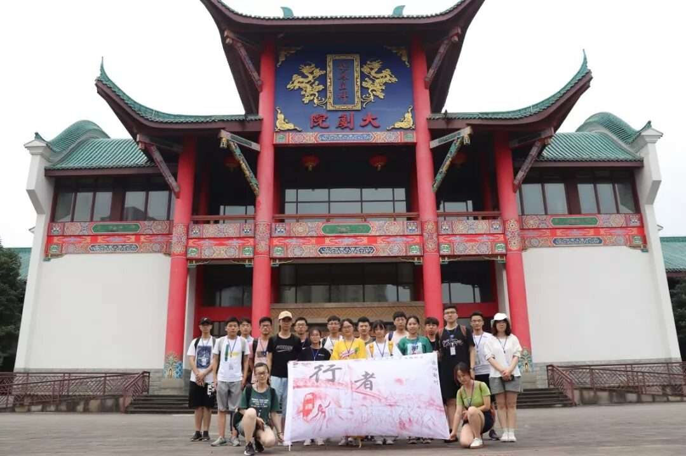

【行者无疆·源洄渝州】巴俗川腔 夜品醇香

重庆地处中国西南部，是国家历史文化名城。从东周巴国走来，两千多年的历史长河让重庆沉积着历史的沧桑。改革开放以来，重庆作为西部大开发的重要支点，它的国际化程度日益加深，在新元素不断涌入的同时，曾经的本土文化也在悄然变化。每一种文化都值得被保护，为了探究当代巴渝文化的现状，行者来到了这里。

雨住风轻波不惊，翠微慢飏踏无尘。
稳重雄塔镇园气，婀娜新枝掠水痕。

今日首站，行者们来到了与巴渝民俗文化村融为一体的碧津公园。映入眼帘的是几栋秀气复古的房屋、一片郁郁葱葱的树林以及纵横其间的阡陌。
行者们神情专注，跟随着解说员的脚步：有着中华第一龛之称的金木雕家神龛，其形象之高大、用金之厚重、实乃世间罕见，龛上文字书写之寓意、雕刻之细腻，亦让人赞不绝口。
于古床馆中陈列着多张拔步床，床体上的木雕俨然一幅巴渝民俗风景画；而作为拔步床代表之一的六柱五檐满金雕花大床，其独具匠心的流苏设计精妙地展示了渝北木雕的工匠精神。

在古文物展区，一位老收藏家的讲述让行者们备受感动。老先生一生致力于收藏古文物，只因幼时其师流露出的对文物的感情；也正是因为像老先生这些人的存在，我们的传统文化和非物质文化遗产才得以完整的保存和传承。
万物逢春脱旧蹊，百花齐放茁新枝。
蜀讴渝舞古来好，川剧高腔今出奇。
——郭沫若
川剧作为重庆非物质文化遗产的重要组成部分，是融汇高腔、昆曲、胡琴、弹戏和四川民间灯戏五种声腔艺术而成的传统剧种。川剧在戏剧的表现手法、表演技法多有卓越创造。

行者们的第二站来到了重庆市川剧博物馆。川剧中最广为人知的表演技法便是变脸，它主要用于揭示剧中人物的内心及思想感情的变化，把不可见不可感的抽象的情绪和心理状态变成可见可感的具体形象。在馆中有一位川剧脸谱绘画大师留下的未完成的脸谱套图，这幅老先生的未竟之作让行者们在倍感惋惜的同时也为一代大师对川剧文化传承精神深深打动。

馆中还陈列了诸多老一辈艺术家创作的川剧剧本手稿，其中最家喻户晓的剧本是斩获中国所有舞台剧大奖的《金子》，其主演者沈铁梅女士也为川剧的发展起到了举足轻重的作用。在讲解员的耐心讲解之后，行者们切身理解了“台上一分钟，台下十年功”的涵义，也愈发地敬佩川剧工作者的不易。
每一种文化的传承都是一场与时间的赛跑
一代代文化传承人的坚守
换来了当下文化的精彩纷呈
期愿在百花齐放的同时
也不忘推陈出新的传承

来源丨行者无疆实践团
文字丨张锐
排版丨邓子孚
审核丨邓子孚 段智然
行者无疆实践团
QQ：2758025831

随行者一起认识世界
长按二维码关注